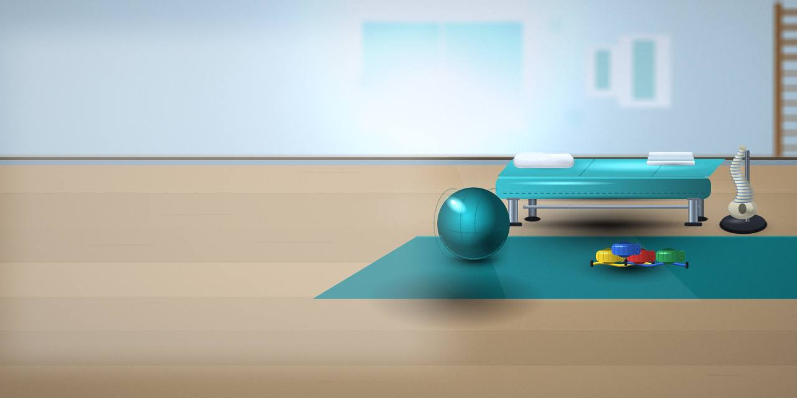
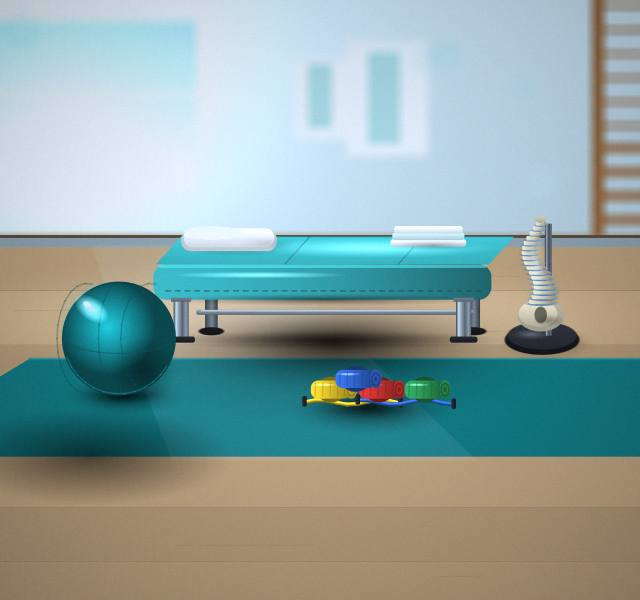
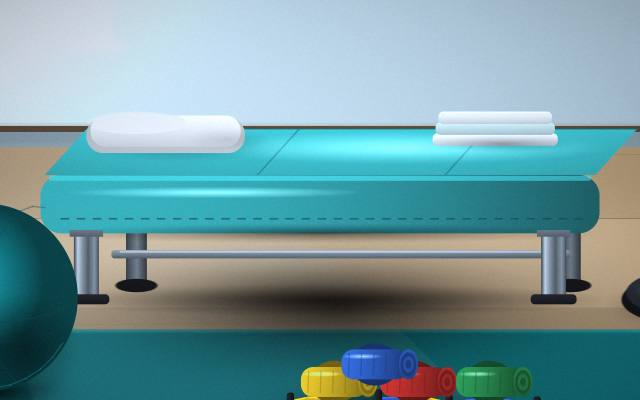
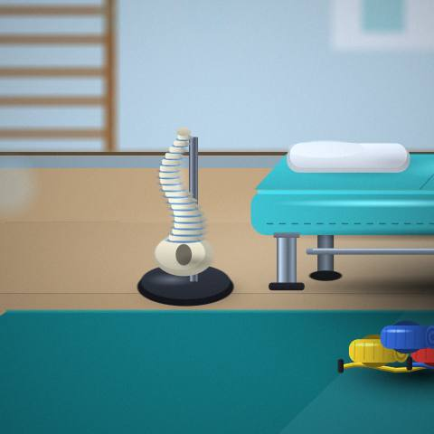
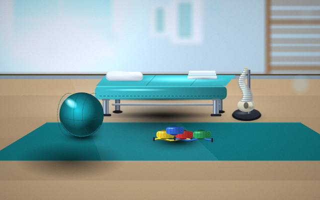
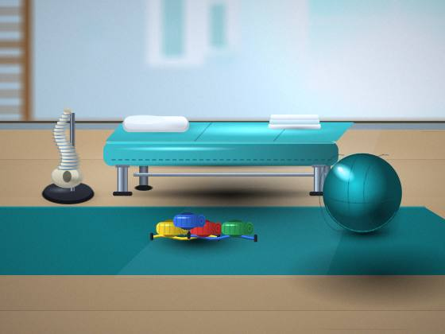

Exercises
Let us know what you need from Exercises and we will suggest where to start.

Physiotherapy Centre · Pune
You will always know what comes next.

Take a look around and feel free to ask us anything.
You'll find us in Pune. Tell us what suits you and we'll confirm.
Let us know what you need from Exercises and we will suggest where to start.
Not sure if Taping is right for you? A consultation will tell you.
Not sure about Programs? Start with a short conversation.
Feel free to ask us how Assessments works and what to expect.
Let us know your concern about Treatments and we will recommend what makes sense.




Share what's been bothering you at the time of booking.
We examine, explain your options and answer questions.
We review how you're doing and adjust the plan.
Five questions worth asking before you make up your mind.
How to give yourself time.
Setting expectations on both sides.
Bring any earlier reports or scans, and a list of questions.
We're in Pune; reach out for directions.
Yes; use the contact details on this page and we'll reply.
Yes; just let us know who the booking is for.
A conversation is the best first step.
Book an appointment